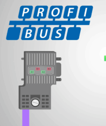
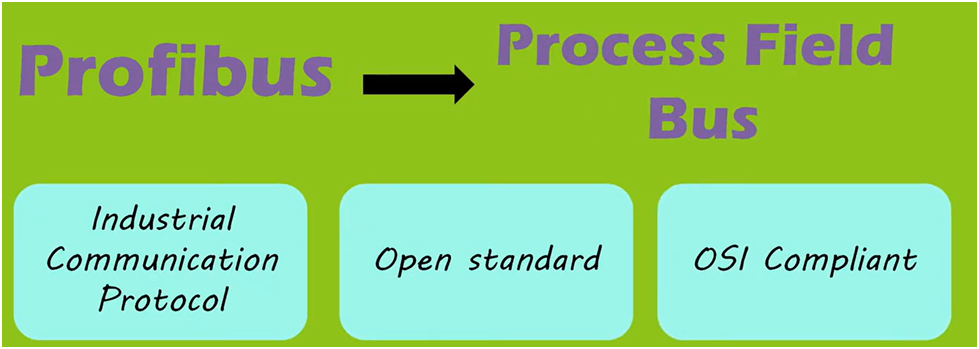
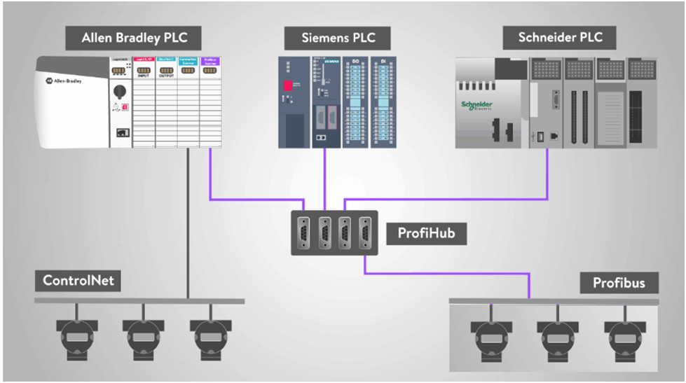
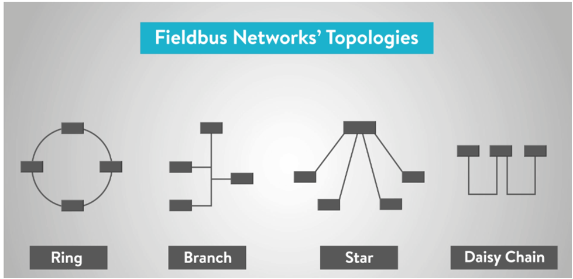
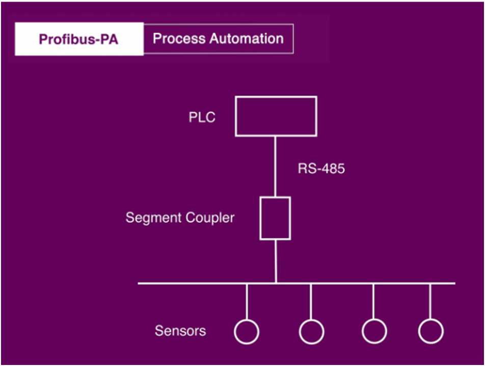

Profibus
Profibus (Process Field Bus) is a widely used industrial fieldbus communication protocol developed by Siemens in the late 1980s. It enables high-speed, reliable data exchange between automation devices such as PLCs, sensors, actuators, and VFDs in both factory and process automation.


It is designed for deterministic communication, ensuring predictable and real-time data transfer.

Features of Profibus
- 9 Pin D Type connector used; impedance terminated
- 32 nodes without repeater and 127 nodes with repeaters
- Network length: up to 24 km with repeaters and optical fiber
- Data rate: 9.6 kbps to 12 Mbps
- Maximum message size: 244 bytes of data; 256 bytes with overhead
- Communication mechanism: Token Passing and Polling
Types of Profibus

1. Profibus-DP (Decentralized Peripherals)
- High-speed communication protocol for factory automation
- Master–slave architecture
- Used to control VFDs, sensors, actuators, and I/O modules
- Typical speed: 12 Mbps at short distances, lower speeds for longer cables
Applications:
- Conveyors, robotic cells, packaging machines
- PLC–VFD communication
2. Profibus-PA (Process Automation)
- Designed for process industries (chemical, oil & gas, pharmaceutical)
- Uses intrinsically safe communication over long distances
- Can supply power and data on the same two-wire bus
- Slower speed than DP (typically 31.25 kbps)

Applications:
- Temperature, pressure, flow sensors in hazardous areas
- Control loops in chemical plants
3. Profibus-FMS (Fieldbus Message Specification) – less common today
- Designed for complex, multidrop communication
- Multi-master capability
- Mainly replaced by Profibus-DP and PA
Profibus Communication Principle
-
Master Device
- Initiates communication, polls slaves, or controls cyclic data exchange
- Examples: PLC, industrial PC
-
Slave Device
- Responds to master requests
- Examples: VFD, sensor, I/O module
-
Data Exchange
- Cyclic Data – Regular updates (I/O process data)
- Acyclic Data – Occasional configuration or parameterization
Advantages of Profibus
- High-speed and deterministic communication
- Reliable in industrial environments
- Supports large networks (up to 126 devices per segment)
- Reduced wiring compared to point-to-point connections
- Standardized and vendor-independent
Typical Applications
- Factory automation: PLC → VFD → Motor control
- Process automation: Sensors, transmitters, and actuators in chemical/oil plants
- Machine tools, robotics, packaging lines
Summary Table – Profibus Types
| Profibus Type | Speed | Application | Notes |
|---|---|---|---|
| DP (Decentralized Peripherals) | Up to 12 Mbps | Factory automation | High-speed, master–slave |
| PA (Process Automation) | 31.25 kbps | Process industries | Intrinsically safe, power & data on same bus |
| FMS (Fieldbus Message Specification) | Medium | Complex multi-master networks | Rarely used today |